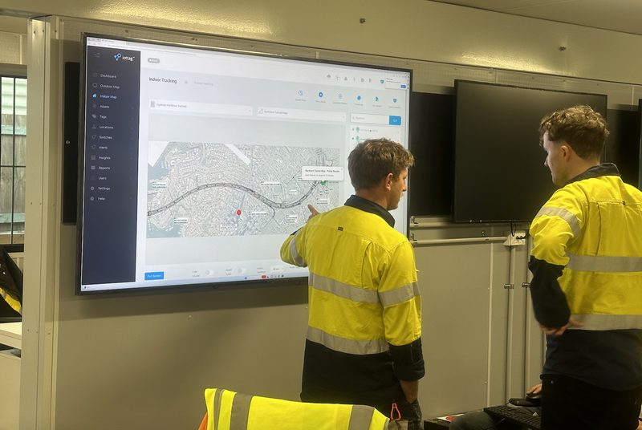
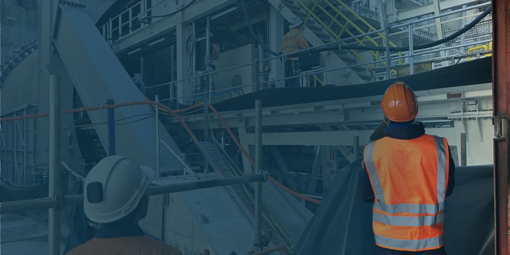
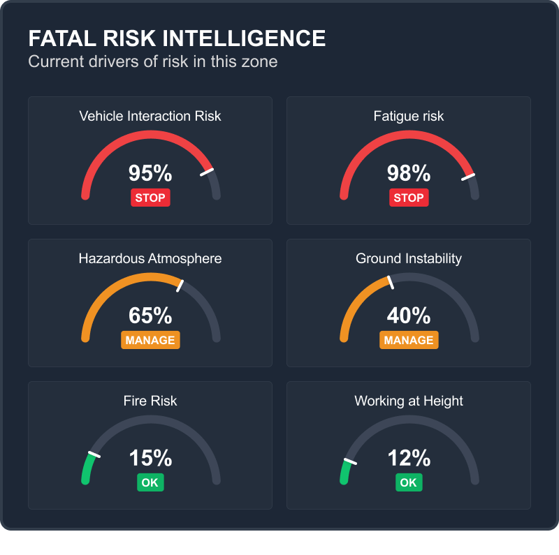
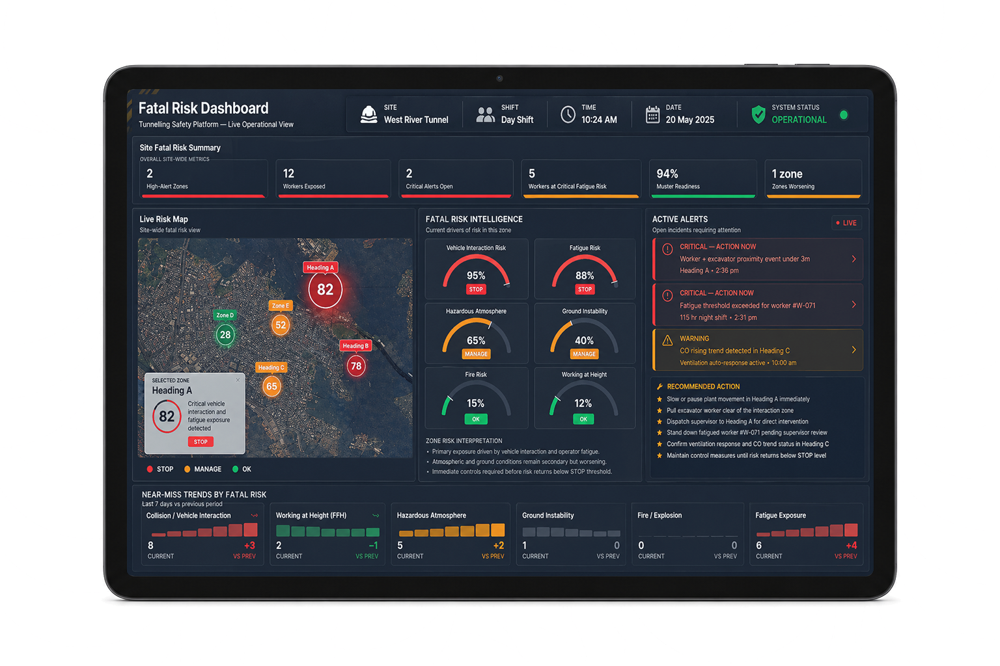
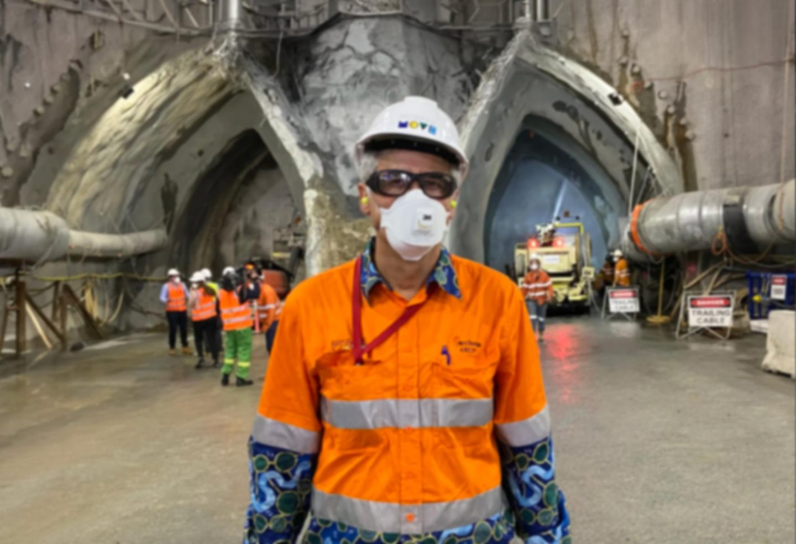
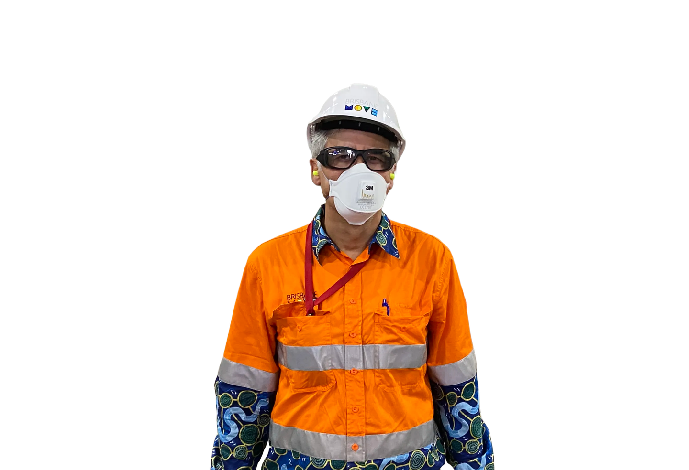

Fatal Risk Intelligence
Predicting Fatal Risk
Before It Happens
Traditional safety systems record what has already happened.
Fatal Risk Intelligence continuously understands how changing operational conditions interact, identifies emerging exposure before incidents occur, and provides the operational understanding needed to intervene while outcomes can still be changed.
Understanding The Conditions That Create Fatal Risk
Near misses, injuries and fatalities remain the greatest challenges faced by high-risk industries.
While each risk is different, they all share one common pattern, they are influenced by environment and operational activities.
By understanding the underlying critical risk factors together, organisations gain the operational insight needed to reduce exposure, improve decision-making and move towards a Zero Harm future.
Vehicle Interaction
Working At Height
Hazardous Atmospheres
Fire & Explosion
Fatigue
Emergency Response
iottag continuously analyses how people, vehicles, equipment, environmental conditions and operational activities interact
to reveal the invisible risks that require attention before serious incidents occur.
How Fatal Risk
Intelligence Works
Fatal risks rarely develop because of a single event.
They emerge as operational conditions interact over time.
The Atlas Platform continuously connects information from workforce activity, vehicle movements, operational equipment, environmental monitoring and production systems to understand how those interactions influence exposure across the operation.
Rather than analysing each system independently, Atlas creates a live operational understanding that reveals where attention is required before incidents occur.
Atlas Intelligence Platform
Continuously understands how changing conditions interact
Fatal Risk Intelligence


Understanding Exposure
Before Incidents Occur
Traditional safety systems
focus on single events
Fatal Risk Intelligence focuses on exposure.
Rather than waiting for an unsafe event to occur, the Atlas Platform continuously analyses operational conditions across the entire operation, identifying where fatal risks are developing and providing the understanding required for earlier intervention.
This allows organisations to move beyond reactive safety management towards continuous operational risk understanding.

See Risk Before It Becomes Fatal
Fatal Risk Intelligence continuously analyses operational trends and emerging patterns to identify risks before they become incidents. As conditions change, the system generates real-time STOP WORKS or INVESTIGATE actions, guiding supervisors toward the risk zones that require immediate attention or further review based on their urgency and potential impact.
Rather than simply reporting alarms, iottag informs safety teams of emerging risk, intervene earlier and resolve hazards before they escalate, providing the operational insight needed to stay ahead of changing conditions and make time critical decisions.
The Fatal Risk Dashboard
The Atlas Platform continuously connects information from workforce activity, vehicle movements, operational equipment, environmental monitoring and production systems to understand how those interactions influence exposure across the operation.
Features:
- Live operational map
- Exposure indicators
- Risk drivers
- AI pattern recognition
- Recommended interventions
- Operational alerts
- Incident context
- Workforce status
- Vehicle status
- Environmental monitoring

Understanding Why Exposure Is Increasing
Fatal Risk Intelligence Is Built On Operational Understanding
Fatal risks rarely develop because of a single event. They emerge as operational conditions interact over time.
Example
Instead of saying “High Vehicle Risk”
Atlas explains
Vehicle exposure has increased because heavy vehicle movements have increased by 38%, visibility has reduced due to dust generation, two maintenance activities are occurring simultaneously and pedestrian traffic has increased during shift change.
That is operational understanding


Why Safety manager Choose Fatal Risk Intelligence
Operational Outcomes
Earlier Intervention
Identify escalating exposure before incidents occur.
Faster Emergency Coordination
Improve personnel visibility and response readiness.
Stronger Operational Visibility
Unified awareness across workers, plant and environment.
Measurable Risk Trends
Track recurring exposure patterns and hotspot activity.
Reduced Operational Blind Spots
Connect fragmented systems into one live operational view.
Improved Control Verification
Validate critical controls in real operational conditions.
Understand Exposure Before Incidents Occur
Every operation generates thousands of changing conditions every minute.
The organisations that understand how those conditions interact make better operational decisions, intervene earlier and create safer, more efficient operations.